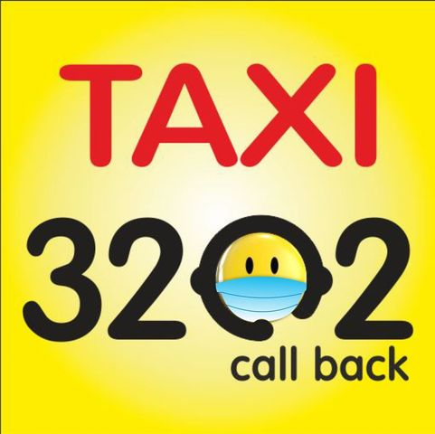

транспорт
Ищите не дорогое такси в городе Святогорске ?
В настоящее время в городе работают несколько служб такси
Служба такси "Своё такси 905". Набирайте короткий номер "905"
Единая служба заказа такси 3202. Набирайте короткий номер "3202"

TAXI
taxi city of Svyatogorsk taxi-905 taxi 3202